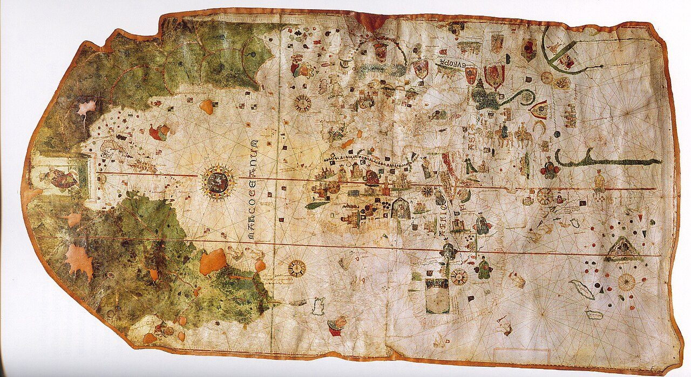
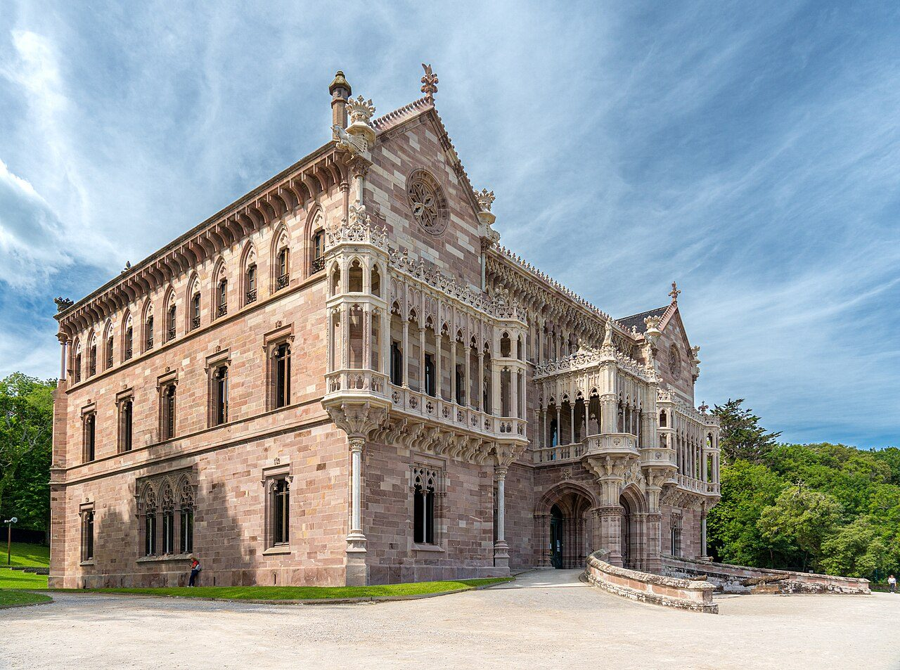

Personajes que proyectan Cantabria
Criterios: PC 7.1, PC 1.2
🤔 Pienso5 min
Qué hago aquí: Piensa un momento y contesta con lo que ya sabes. No pasa nada si no lo sabes: es para empezar.
Si alguien de otro país te pregunta por Cantabria, ¿qué tres cosas o personas le nombrarías?
📖 Leo y aprendo15 min
Qué hago aquí: Lee despacio, mira los dibujos y los ejemplos, y quédate con la idea clave del final.
Algunas personas llevaron el nombre de Cantabria muy lejos: al otro lado del océano, a la historia de España o a las grandes empresas del mundo.

Foto: Juan de la Cosa · Public domain · 1500 map by Juan de la Cosa rotated.jpg

Foto: Fernando · CC BY-SA 4.0 · Palacio de Sobrellano 2021.jpg
héroe del Dos de Mayo de 1808; nació en Muriedas
nacido en 1857, hoy presente en muchos países
cursos de verano en la Magdalena desde 1932
la cueva más famosa del mundo
✏️ Hago25 min
Qué hago aquí: Haz las actividades en orden. Empieza siempre por las básicas.
Explica por qué el mapa de Juan de la Cosa es tan importante y qué nos dice sobre lo que se sabía de América en 1500.
Explica quiénes eran los indianos, por qué emigraron y qué huella dejaron en sus pueblos. ¿Cómo reconocerías una casona de indiano?
Explica por qué el Hospital Valdecilla y los edificios de Comillas son a la vez patrimonio histórico y patrimonio de la emigración.
Explica por qué la casa natal de Pedro Velarde es hoy Museo Etnográfico. ¿Qué tienen que ver un héroe y la vida tradicional?
La emigración a América fue en parte una necesidad. Explica dos causas de la emigración cántabra en el siglo xix y compáralas con las causas de las migraciones de hoy.
Elige tres personajes de toda la unidad para una campaña «Cantabria en el mundo». Justifica tu elección y escribe un eslogan para cada uno.
Busca una casona de indiano en tu comarca. Describe su arquitectura (materiales, jardín, torre, palmera) y su uso actual.
✏️ Puedes responder escribiendo, con un dibujo o un esquema, o contándolo en voz alta.
🚀 Amplío (si quieres saber más)
Qué hago aquí: ¿Has terminado? Lee la curiosidad o elige el reto. Es voluntario.
Compara el mapa de Juan de la Cosa con un mapa actual del Atlántico. Señala tres aciertos y tres errores, y explica con qué instrumentos y conocimientos se hacía un mapa en 1500.
✅ Compruebo5 min
Qué hago aquí: Contesta sin mirar la ficha y marca cómo lo llevas.